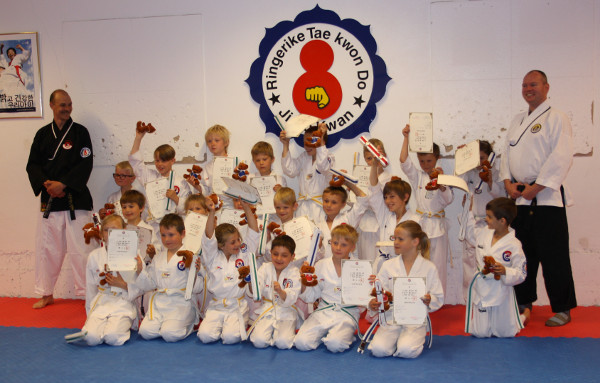

Innlegg
2013 juni. Gradering Tiger gruppen

På lørdagen den 15 juni var det gradering for juniorene som er fra alderen mellom 6 og 10 år. Det var 21 stk juniorer som skulle gradere på lørdagen dette er noe som lover bra for framtiden for Ringerike TKD. Det var mange som gledet seg til å gradere og det var noen som gruet seg litt men når dagen var slutt var alle sammen glade. For da kunne juniorene vise fram det nye beltet sitt, diplomet som man får etter en gradering og en liten TKD bamse som var en sommergave fra Ringerike TKD.